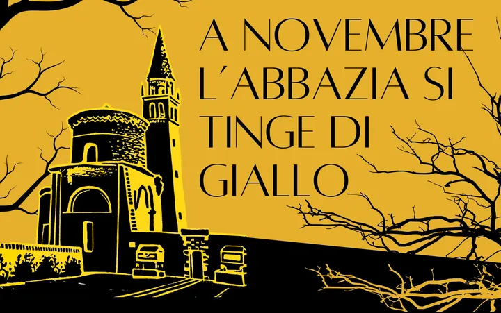

da ven 6 nov a dom 8 nov
Giallo in Abbazia
A novembre, l'Abbazia si tinge di Giallo, con sfumature di noir! Da venerdì 06 a domenica 08 novembre 2026 vi aspetta la terza edizione di GIALLO IN ABBAZIA – Festival del libro giallo, il primo festival dedicato al libro giallo del Polesine. Quest’anno saranno circa 30 gli…
 Indicazioni
Indicazioni
- Costi e prenotazioni
- Costo non indicato · Prenotazione non indicata
- Programma
- Programma da verificare. Apri la fonte ufficiale per orari e possibili aggiornamenti.
- In caso di maltempo
- Nessuna indicazione specifica pubblicata.
- Note
- Acquisito automaticamente dalla fonte.
L’EVENTO
Descrizione completa
A novembre, l'Abbazia si tinge di Giallo, con sfumature di noir! Da venerdì 06 a domenica 08 novembre 2026 vi aspetta la terza edizione di GIALLO IN ABBAZIA – Festival del libro giallo, il primo festival dedicato al libro giallo del Polesine. Quest’anno saranno circa 30 gli autori protagonisti della quarta edizione, con nomi come Alice Basso, Sandrone Dazieri, Barbara Perna, Bruno Morchio e Barbara Baraldi. Ma attenzione… a Giallo in Abbazia non si viene soltanto per leggere. Si viene per ascoltare storie, incontrare scrittori, lasciarsi coinvolgere dalle atmosfere del noir e scoprire che, dietro ogni mistero, potrebbe nascondersi una nuova verità.
Sabato 7 novembre 2026, alle ore 21.30, il Teatro Sociale “E. Balzan” di Badia Polesine ospiterà Cozy Crimers, uno spettacolo letterario con quattro protagoniste della narrativa italiana contemporanea: Barbara Perna, Alice Basso, Valeria Corciolani e Serena Venditto.Quattro autrici, quattro mondi narrativi e una passione comune per il giallo, per uno spettacolo tra dialoghi, racconti, letture e tante sorprese.Non una semplice presentazione di libri, ma un incontro speciale per scoprire le autrici e le loro storie in un'atmosfera informale, coinvolgente e ricca di complicità.
Dal 6 al 14 novembre 2026, la Biblioteca Civica “G.G. Bronziero” di Badia Polesine ospita Giallo in Foto, la mostra fotografica a cura del Gruppo Fotografico 38, nell’ambito della quarta edizione di Giallo in Abbazia – Festival del Libro Giallo. Perché, proprio come in un romanzo giallo, anche una fotografia può raccontare una storia, insinuare un dubbio e lasciare spazio all’immaginazione. Biblioteca Civica “G.G. Bronziero” Sala “Nadir Tedeschi” – Via Cigno 109, Badia Polesine.
Vi aspettiamo per scoprire il lato fotografico del mistero!
Un appuntamento da non perdere per tutti gli appassionati di libri gialli, noir, thriller e amanti del mistero
IL PROGRAMMA
Programma e orari
Appuntamenti raccolti dalle fonti elencate. Dove manca un orario, non è ancora disponibile in questa scheda.
Programma pubblicato
- 2026-11-06 — 2026-11-08 ·
INFORMAZIONI UTILI
Prima di partire
- Controllare la fonte prima di partire.
ORGANIZZAZIONE